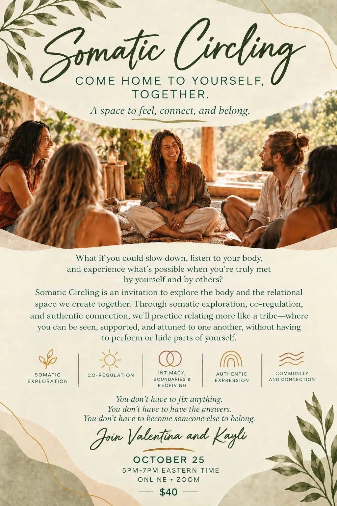

Somatic Circling
Come home to yourself, together.
A space to feel, connect, and belong.

What if you could slow down, listen to your body, and experience what's possible when you're truly met — by yourself and by others?
Somatic Circling is an invitation to explore the body and the relational space we create together. Through somatic exploration, co-regulation, and authentic connection, we'll practice relating more like a tribe — where you can be seen, supported, and attuned to one another, without having to perform or hide parts of yourself.
You don't have to fix anything.
You don't have to have the answers.
You don't have to become someone else to belong.
Join an upcoming circle
Sunday, November 22 · 5–7pm ET
Book SessionHosted with Soul Vale. Questions? Email Valentina.
Join Valentina and Kayli
Valentina Marulli is a holistic coach supporting ancestral healing, Emotion Code, and nervous system restoration. Kayli co-holds this circle as a space for somatic connection and community.